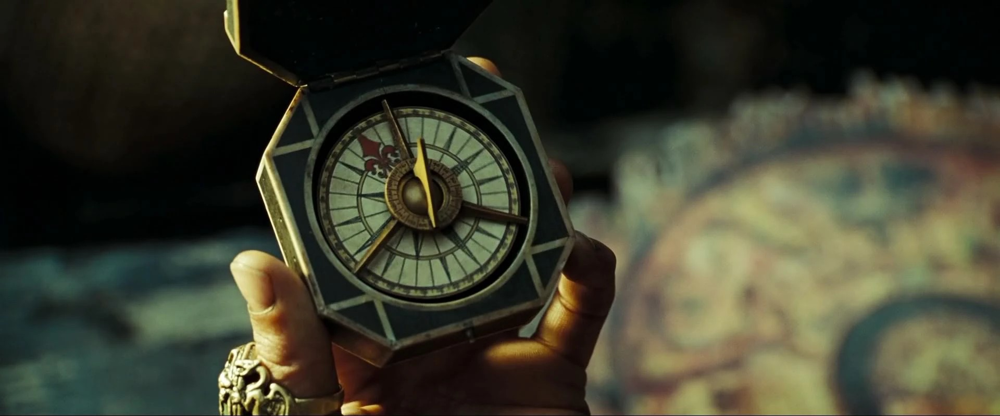

Made with ❤️

Lost and Found
A Chinese proverb I faintly remember goes like this: A man can never jump into the same river twice, for it is
never the same river again, nor the same man.
Reflecting on it, I can draw a similar analogy with traveling. Traveling is an acquired taste for me. I was not
someone who looked forward to journeys and trips. But moving to a new city for work and eventually going on a
few trips changed my perspective. There is so much to learn and discover when visiting new places.So, here are a
few pointers (not recommendations, just reflections) for both you and me:
So, here are a few pointers (not recommendations, just reflections) for both you and me:
1. 1. You can plan only the basic. Like, where to stay and logistics. Beyond that, nothing will go exactly as
planned. Believe me, it’s better if it doesn’t. That’s what makes the experience truly great.
2. Try choosing a homestay over hotels.
3. Don’t restrict yourself. Try every activity (do that toy train ride too) and visit as many site seeing places
as possible.
4. Use internet suggestions, but believe me local people (e.g. rickshaw/ cab drivers) are the best guides. Reels
are the second best.
5. Some places deserve to be visited twice to be fully experienced. I felt this after my recent trip to
Varanasi.
6. Even if certain things are available in your hometown, buy a few from the place you’re visiting. Coz, It’s
not just about the thing; it’s about the place.
So I repeat, one can say that the same person never returns from a trip. Pack your bags and just go somewhere.
Let me know if you have any such pointers to keep in mind while travelling. Cheers, untill next time!🧭